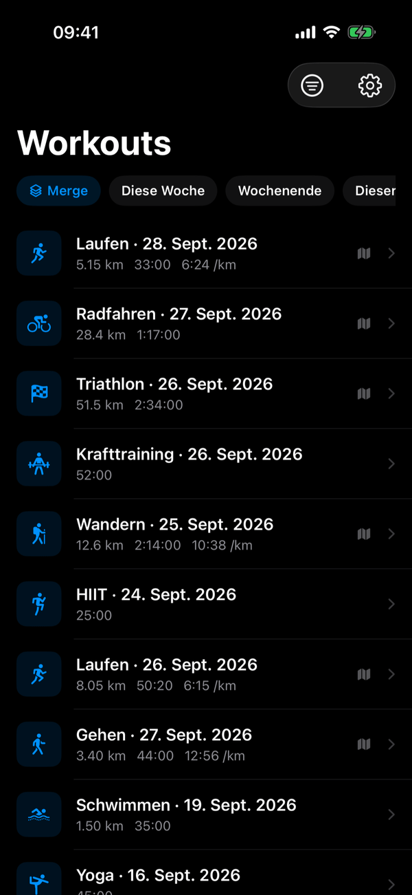
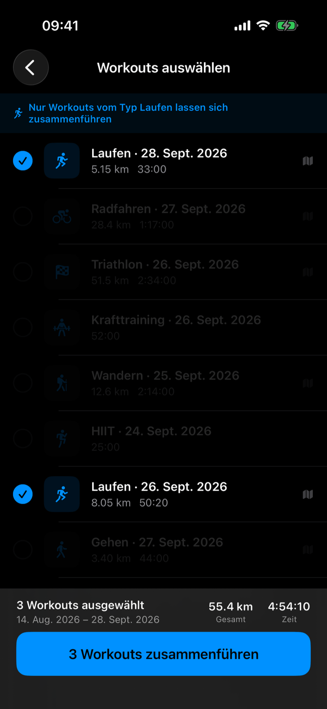
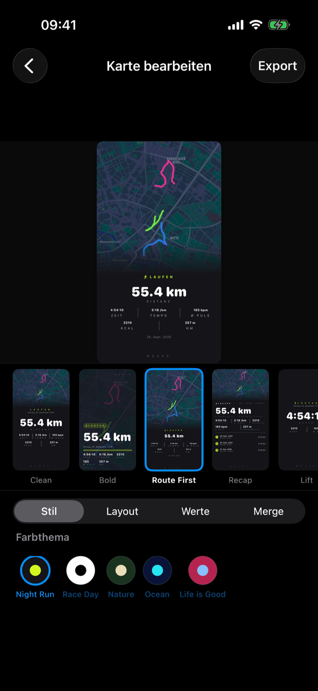
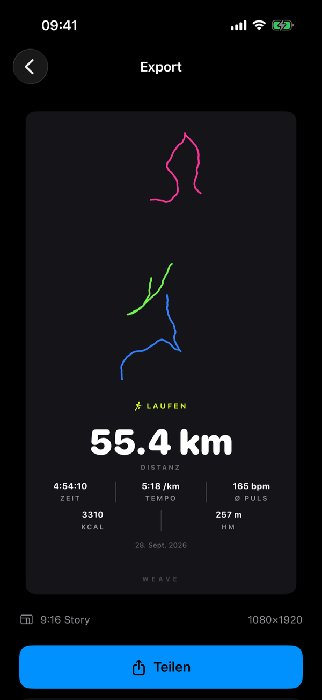

Weave macht aus deinen Apple Watch Workouts gestaltete, Social-Media-taugliche Karten — Routenkarte, Tempo, Distanz, Zwischenzeiten. Keine Screenshots. Kein Strava-Konto.




Trag deine E-Mail-Adresse ein, dann schicken wir dir eine TestFlight-Einladung, sobald die Beta startet. Ein App-Konto oder Workout-Daten brauchst du dafür nicht.
Alles kommt direkt aus Apple Health. Nichts verlässt dein Gerät, bis du auf „Teilen“ tippst.
Wähle zwei oder mehr Workouts derselben Sportart — einen Trainingsblock, ein Rennwochenende, eine Woche voller Radtouren — und fasse sie zu einer Recap-Karte mit gemeinsamen Werten und einer zusammengeführten Route zusammen. Deine eigene Recap-Karte aus mehreren Workouts – mit wenigen Fingertipps. Was das vom Kombinieren auf der Apple Watch unterscheidet →
Clean, Bold, Route First, Recap und Lift — wähle den Look, der zu deinem Workout und deinem Feed passt. Lift ist für Krafttraining gemacht, Recap für die Werte zusammengeführter Workouts.
Exportiere eine vollständige Karte oder einen transparenten Sticker, den du in dein eigenes Instagram-Story-Design legst. So teilst du ein Workout auf Instagram →
Zeichne deine Route als klare Linie statt als Karten-Screenshot — schneller gerendert und ideal für einen minimalistischen Look.
Kein Konto, kein verknüpftes soziales Netzwerk, kein Backend-Server. Deine Workout-Daten verlassen dein iPhone nie. Zur Datenschutzerklärung →
Ein Einmalkauf, kein Abo. Schalte das volle Weave-Erlebnis frei.
Nein. Weave braucht weder ein Strava-Konto noch ein eigenes Konto. Die App liest deine Workouts direkt aus Apple Health auf deinem iPhone – du musst dich nirgends anmelden und nichts verknüpfen.
Nein. Weave funktioniert mit jedem Workout, das in Apple Health gespeichert ist – egal, ob von der Apple Watch, vom iPhone oder von einer anderen App, die Workouts in Apple Health speichert. Für eine Routenkarte braucht das Workout eine aufgezeichnete GPS-Route, für Herzfrequenzgrafiken Herzfrequenzdaten – die zeichnet die Apple Watch für dich auf.
Ja, mit Weave Pro. Wähle zwei oder mehr Workouts derselben Sportart aus, zum Beispiel alle Läufe dieser Woche, und Weave führt sie zu einer Recap-Karte zusammen – mit Gesamtdistanz, Gesamtdauer und Durchschnittstempo und einer Übersicht der einzelnen Workouts. Sportarten lassen sich nicht mischen: Läufe kannst du nur mit Läufen zusammenführen, Radtouren nur mit Radtouren.
Nein. Weave kannst du kostenlos herunterladen; kostenlose Karten haben ein kleines Weave-Wasserzeichen. Weave Pro ist ein einmaliger In-App-Kauf: Damit kannst du Workouts zusammenführen und alle Vorlagen, Vektorrouten und eine eigene Farbe pro Route auf zusammengeführten Karten nutzen – und das Wasserzeichen verschwindet. Nichts verlängert sich automatisch.
Nicht an uns. Weave hat kein Konto, keinen Server und kein Tracking: Die App liest deine Workouts aus Apple Health und erstellt jede Karte auf deinem iPhone. Rinnebühl Labs bekommt deine Workout-Daten nie, und eine Karte verlässt dein iPhone erst, wenn du sie selbst teilst. Für Routenkarten lädt Apple Karten den Kartenausschnitt deiner Route – wie jede Karten-App.
Metrische Einheiten: Distanz in Kilometern, Tempo pro Kilometer und Geschwindigkeit in km/h. Meilen lassen sich nicht einstellen.